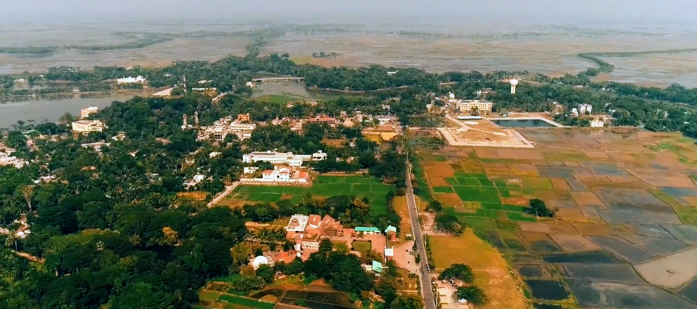

Gopalganj District is a city or administrative region in the southwestern part of Dhaka Division of Bangladesh.It is located on the banks of
the Madhumati River, 127 km southwest of the capital Dhaka.It has an area of about 1468.74 square kilometers and a population of about 11,72,415.
Gopalganj isthe main and district head town of this district.
Gopalganj is a district located in the central part of Bangladesh, situated in the Dhaka Division. It is an area known for its picturesque
landscapes, including rivers, ponds, and lush greenery, which contribute to its agricultural significance. The district is mainly rural, with
rice, jute, and fish farming being the primary occupations of its residents.Gopalganj is historically important as it is the birthplace of
Sheikh Fazlul Haque Manik, a prominent political figure and the uncle of Bangladesh’s former Prime Minister, Sheikh Hasina.The district also
holds cultural significance, with various local traditions, festivals, and religious practices. Gopalganj has seen development in infrastructure
and education, with schools, colleges, and healthcare facilities working to improve the quality of life for its residents. It is well-connected
to the capital, Dhaka, making it an integral part of the region.
Historical Places :
- Bangabandhu Samadhi Complex at Tungipara
- Chandra Varma Fort (Kotal Fort)
- Multistoried Mosque (established in 1553)
- Historic City Hall
- Century-old mango tree
Popular Foods :
- Chana Sweets
- Sondesh
- Roshmolai
- Roshogolla
- Doi (Curd)